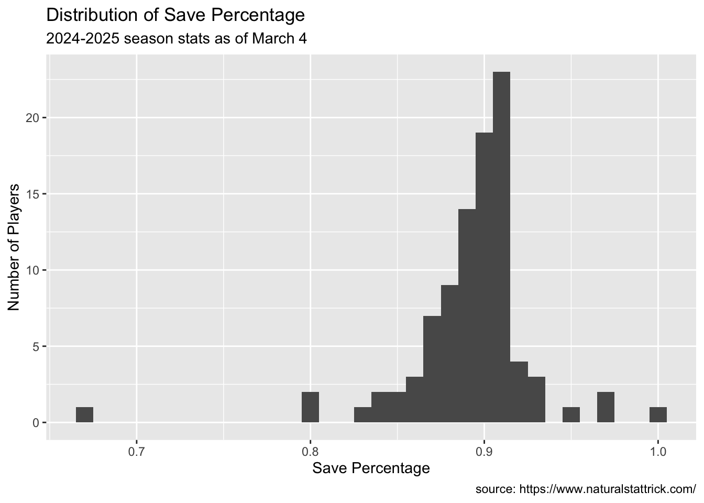
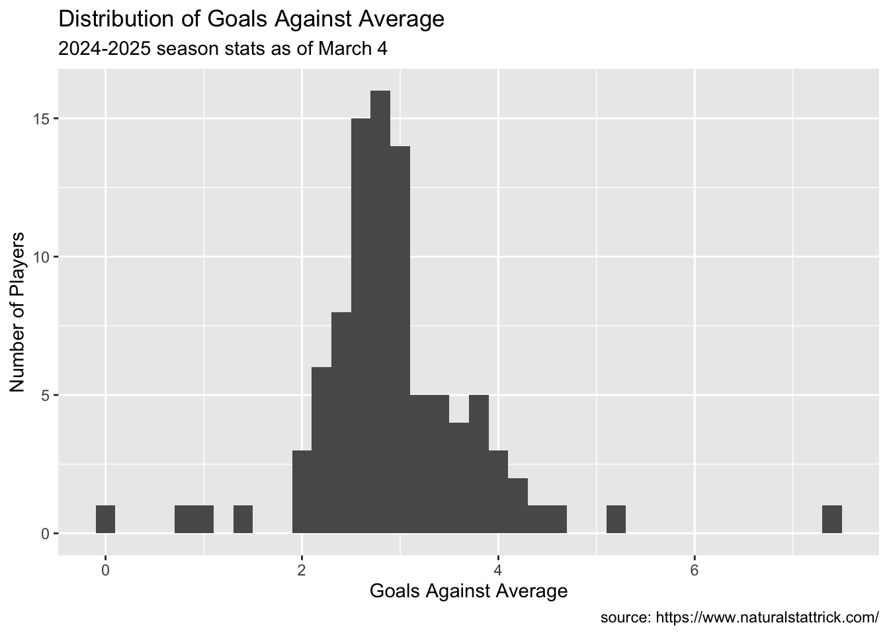
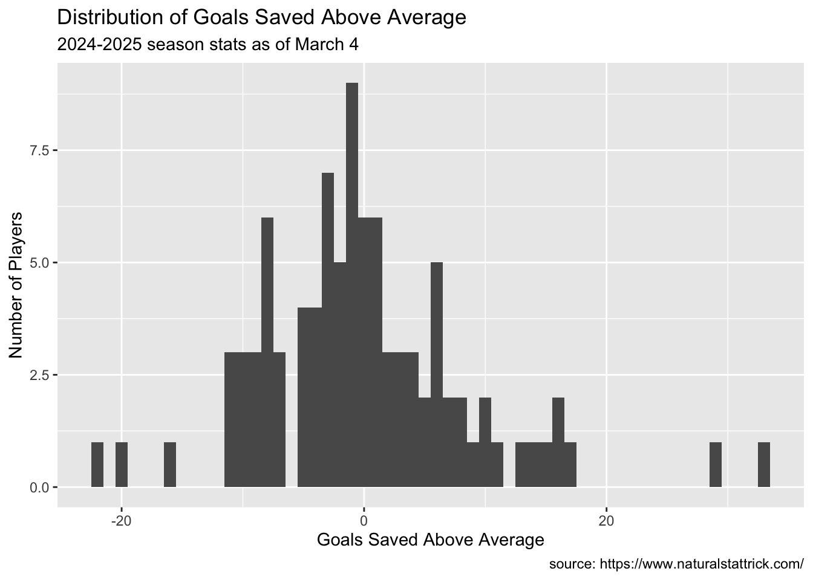
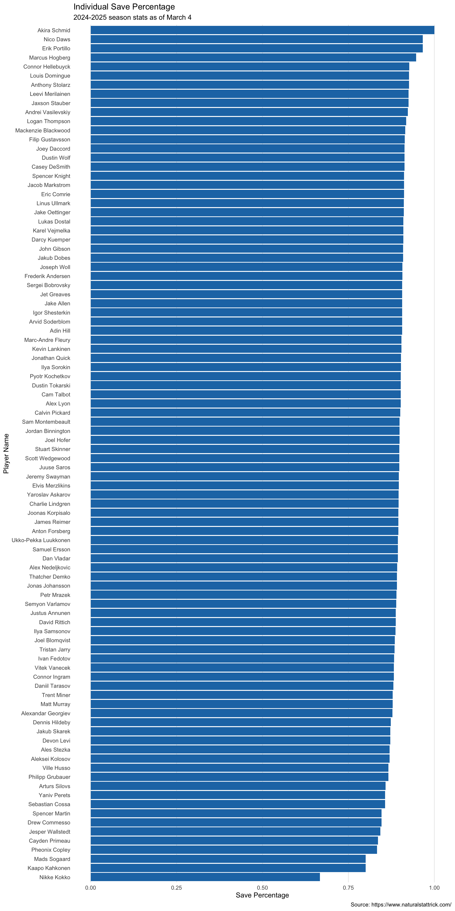

Who is the best goalie? I’ll start by examining the stats from the assignment.
Code
ggplot(Goalie, aes(x=SV.))+geom_histogram(binwidth = .01)+labs(x ="Save Percentage",y ="Number of Players",caption ="source: https://www.naturalstattrick.com/",title ="Distribution of Save Percentage",subtitle ="2024-2025 season stats as of March 4")

Code
ggplot(Goalie, aes(x=GAA))+geom_histogram(binwidth = .2)+labs(x ="Goals Against Average",y ="Number of Players",caption ="source: https://www.naturalstattrick.com/",title ="Distribution of Goals Against Average",subtitle ="2024-2025 season stats as of March 4")

Code
ggplot(Goalie, aes(x=GSAA))+geom_histogram(binwidth =1)+labs(x ="Goals Saved Above Average",y ="Number of Players",caption ="source: https://www.naturalstattrick.com/",title ="Distribution of Goals Saved Above Average",subtitle ="2024-2025 season stats as of March 4")

Not super helpful. This is because our task is related to comparing values for individual players. Let’s do that for Save Percentage.
Code
ggplot(Goalie, aes(x=SV., y=reorder(Player, SV.))) +geom_col(fill="#1F77B4") +labs(x ="Save Percentage",y ="Player Name",caption ="Source: https://www.naturalstattrick.com/",title ="Individual Save Percentage",subtitle ="2024-2025 season stats as of March 4") +theme_minimal() +theme(panel.grid.major.y =element_blank(),panel.grid.minor =element_blank())

Yay! We are done! My Vezina Ballot will be the top five players on this plot in order. Right?
Source Code
---title: "TUTORIAL 7"subtitle: "Data Driven NHL Award Voting"author: "Barrie Robison"date: "2025-03-04"categories: [Tutorial, DataViz, Tables, Tidyverse]image: "Cthulhuhockeycard.png"code-fold: truecode-tools: truedescription: "Rationalizing my intuition with data."---```{r include=FALSE}library(tidyverse)library(readxl)``````{r}Indivdual.Skater <-read.csv("SkaterIndividualstats.csv")OnIce.Skater <-read.csv("SkaterOnicestats.csv")Goalie <-read.csv("Goalies.csv")Individual.Skater.Rookie <-read.csv("RookieSkaterindividual.csv")OnIce.Skater.Rookie <-read.csv("RookieSkaterOnIce.csv")Rookie.Goalie <-read.csv("RookieGoalies.csv")```## VEZINA BALLOTWho is the best goalie? I'll start by examining the stats from the assignment.```{r}ggplot(Goalie, aes(x=SV.))+geom_histogram(binwidth = .01)+labs(x ="Save Percentage",y ="Number of Players",caption ="source: https://www.naturalstattrick.com/",title ="Distribution of Save Percentage",subtitle ="2024-2025 season stats as of March 4")ggplot(Goalie, aes(x=GAA))+geom_histogram(binwidth = .2)+labs(x ="Goals Against Average",y ="Number of Players",caption ="source: https://www.naturalstattrick.com/",title ="Distribution of Goals Against Average",subtitle ="2024-2025 season stats as of March 4")ggplot(Goalie, aes(x=GSAA))+geom_histogram(binwidth =1)+labs(x ="Goals Saved Above Average",y ="Number of Players",caption ="source: https://www.naturalstattrick.com/",title ="Distribution of Goals Saved Above Average",subtitle ="2024-2025 season stats as of March 4")```Not super helpful. This is because our task is related to comparing values for individual players. Let's do that for Save Percentage.```{r }ggplot(Goalie%>% filter(GP>25), aes(x=SV., y=reorder(Player, SV.))) + geom_col(fill="#1F77B4") + labs(x = "Save Percentage", y = "Player Name", caption = "Source: https://www.naturalstattrick.com/", title = "Individual Save Percentage", subtitle = "2024-2025 season stats as of March 4") + theme_minimal() + theme(panel.grid.major.y = element_blank(), panel.grid.minor = element_blank())```Yay! We are done! My Vezina Ballot will be the top five players on this plot in order. Right?Not really. Let's explore the data a bit further. I want to show you the same data in the context of **Games Played**. At this point in the season, NHL teams have played between 59 and 63 games. Few goalies start every game, but we need to establish a reasonable threshold for Games Played. ```{r}ggplot(Goalie%>%filter(GP>25), aes(x=GP, y = SV.))+geom_point()ggplot(Goalie%>%filter(GP>25), aes(x = Shots.Against, y = Saves))+geom_point()model <-lm(Saves ~ Shots.Against, data = Goalie)Goalie$Save.residuals <-residuals(model)ggplot(Goalie%>%filter(GP>25), aes(x = Shots.Against, y = Save.residuals))+geom_point()ggplot(Goalie%>%filter(GP>25), aes(x=scale(Save.residuals), y=reorder(Player, Save.residuals))) +geom_col(fill="#1F77B4") +labs(x ="Residual Saves (higher is better)",y ="Player Name (ordered by raw Save Percentage",caption ="Source: https://www.naturalstattrick.com/",title ="Residual Saves ~ Shots Against",subtitle ="2024-2025 season stats as of March 4") +theme_minimal() +theme(panel.grid.major.y =element_blank(),panel.grid.minor =element_blank())``````{r}ggplot(Goalie%>%filter(GP>25), aes(x = xG.Against, y =Goals.Against))+geom_point()model <-lm(Goals.Against ~ xG.Against, data = Goalie)Goalie$Goals.residuals <-residuals(model)ggplot(Goalie%>%filter(GP>25), aes(x = xG.Against, y = Goals.residuals))+geom_point()ggplot(Goalie%>%filter(GP>25), aes(x=scale(Goals.residuals), y=reorder(Player, desc(Goals.residuals)))) +geom_col(fill="#1F77B4") +labs(x ="Residual Goals (lower is better)",y ="Player Name",caption ="Source: https://www.naturalstattrick.com/",title ="Residual Goals Allowed ~ Expected Goals",subtitle ="2024-2025 season stats as of March 4") +theme_minimal() +theme(panel.grid.major.y =element_blank(),panel.grid.minor =element_blank())``````{r}Vez.filtered <- Goalie%>%mutate(scale.save.resid =scale(Save.residuals))%>%mutate(scale.goal.resid =scale(Goals.residuals))%>%mutate(Vezina = scale.save.resid - scale.goal.resid)ggplot(Vez.filtered%>%filter(GP>25), aes(x=Vezina, y=reorder(Player, Vezina))) +geom_col(fill="#1F77B4") +labs(x ="Total Deviation from Mean",y ="Player Name",caption ="Source: https://www.naturalstattrick.com/",title ="Total Standard Deviation (Saves~Shots, Goals~Expected)",subtitle ="2024-2025 season stats as of March 4") +theme_minimal() +theme(panel.grid.major.y =element_blank(),panel.grid.minor =element_blank())# First, create a transformed datasetVez.plot <- Vez.filtered %>%filter(GP >25) %>%mutate(positive_component =pmax(0, scale.save.resid),negative_component =pmin(0, scale.save.resid),negative_goal =-scale.goal.resid # Negate because it's subtracted in Vezina formula ) %>%# Pivot to long format for stackingpivot_longer(cols =c(positive_component, negative_component, negative_goal),names_to ="component",values_to ="value" )# Create the stacked bar chartggplot(Vez.plot, aes(x =reorder(Player, Vezina), y = value, fill = component)) +geom_col() +coord_flip() +scale_fill_manual(values =c("positive_component"="#1F77B4", "negative_component"="#D62728","negative_goal"="#FF7F0E"),labels =c("positive_component"="Positive Save Residual", "negative_component"="Negative Save Residual","negative_goal"="Negative Goal Residual") ) +labs(x ="Player Name",y ="Vezina Score Components",fill ="Component",caption ="Source: https://www.naturalstattrick.com/",title ="Vezina Score Components (save.resid - goal.resid)",subtitle ="2024-2025 season stats as of March 4") +theme_minimal() +theme(panel.grid.major.y =element_blank(),panel.grid.minor =element_blank())``````{r}Scale.Goalies <- Goalie %>%mutate(scale.SV. =scale(SV.))%>%mutate(scale.GAA =-scale(GAA))%>%mutate(scale.GSAA =scale(GSAA))%>%mutate(scale.GSAx =scale(xG.Against-Goals.Against))%>%mutate(scale.Vezina = scale.SV. + scale.GAA + scale.GSAA + scale.GSAx)%>%mutate(rank.SV. =rank(scale.SV.))%>%mutate(rank.GAA =rank(scale.GAA))%>%mutate(rank.GSAA =rank(scale.GSAA))%>%mutate(rank.GSAx =rank(scale.GSAx))Scale.Vez.plot <- Scale.Goalies %>%filter(GP >25) %>%# Pivot to long format for stackingpivot_longer(cols =c(scale.GAA, scale.GSAA, scale.SV., scale.GSAx, rank.GAA, rank.GSAA, rank.SV., rank.GSAx),names_to ="component",values_to ="value" )ggplot(Scale.Vez.plot%>%filter(str_detect(component, "scale")), aes(x =reorder(Player, scale.Vezina), y = value, fill = component)) +geom_col() +coord_flip() +scale_fill_manual(values =c("scale.GAA"="#1F77B4", "scale.GSAA"="#D62728","scale.SV."="#FF7F0E","scale.GSAx"="black") ) +labs(x ="Player Name",y ="Vezina Score Components",fill ="Component",caption ="Source: https://www.naturalstattrick.com/",title ="Vezina Score Components (save.resid - goal.resid)",subtitle ="2024-2025 season stats as of March 4") +theme_minimal() +theme(panel.grid.major.y =element_blank(),panel.grid.minor =element_blank())ggplot(Scale.Vez.plot%>%filter(str_detect(component, "rank")), aes(x=component, y = value, group = Player))+geom_line()```